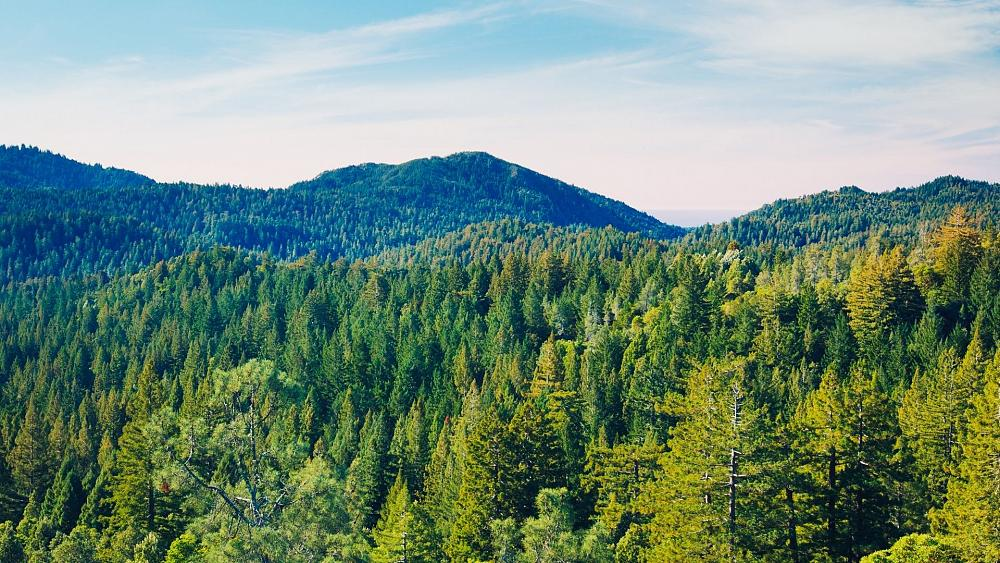

A single hectare of tropical forest may contain more than 480 species of tree.[4] We can compare that figure to temperate forests where just six species make up ninety percent of the trees in an entire forest. However, the richness of species doesn’t correlate to abundance. This means that when walking for a few minutes in the Amazon rainforest, you might find it difficult to find two trees of the same species. Studies show that most tree species are extremely rare in tropical forests, meaning that they may be at serious risk of extinction at current deforestation rates.
the fact above is from click here
